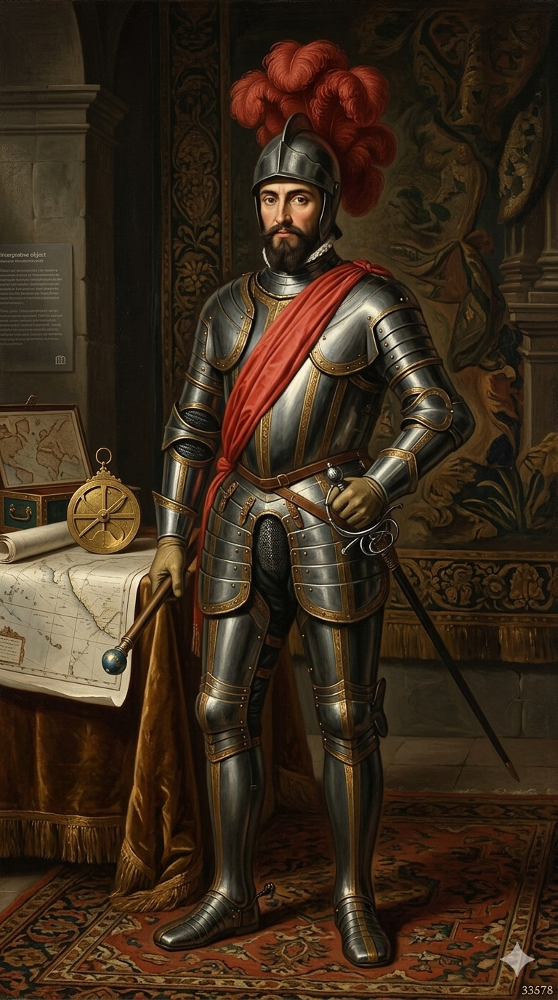

תקציר
פנמה היא אחד המקומות החשובים ביותר בתולדות החקר הספרדי בעולם החדש. היא גשר היסטורי בין שני אוקיינוסים: הים הקריבי והאוקיינוס השקט.
בשנת 1513 חצה ואסקו נונייס דה בלבואה את אזור דריין, בעזרת מידע והדרכה של עמים מקומיים, והגיע לנקודה שממנה ראה את “הים הדרומי” — האוקיינוס השקט.
סיפור ההגעה אל היעד
בניגוד לקולומבוס, שהגיע ליעדים הראשונים מתוך הים הפתוח, סיפור פנמה הוא סיפור של חצייה. בלבואה ואנשיו יצאו מן העולם הקריבי המוכר יותר לספרדים אל תוך אזור לח, ירוק, סבוך וקשה למעבר. לא הייתה כאן הפלגה שקטה אל חוף לבן, אלא צעידה בתוך יערות, נהרות, ביצות, עליות ומורדות.
המסע לא היה יכול להתקיים בלי ידע מקומי. עמים ילידיים הכירו את הדרכים, את הנהרות, את המעברים ואת הסכנות. חלקם שיתפו פעולה, חלקם הוכרחו, וחלקם ניסו להגן על עצמם מפני הכוח הספרדי. בתוך המרחב הזה התקדם בלבואה, כשהשמועה על ים גדול מעבר להרים מושכת אותו קדימה.
לאחר ימים של הליכה קשה, הגיעו הספרדים לנקודת תצפית. בלבואה טיפס קדימה, ובמרחק ראה מים עצומים נפרשים אל האופק. זה לא היה מפרץ קטן ולא עוד חוף קריבי — אלא ים חדש מבחינת אירופה. הוא קרא לו “הים הדרומי”, משום שנגלה לו מדרום לכיוון ההתקדמות.
הרגע הזה שינה את מפת הדמיון האירופית. פתאום היה ברור שממערב לאמריקה נמצא אוקיינוס עצום נוסף. פנמה הפכה מצר יבשה מקומי לצומת עולמי, שער בין אוקיינוסים, ובסיס למסעות עתידיים אל פרו ואל מרחבי האוקיינוס השקט.
מתן השם פנמה
מקור השם Panamá נחשב ילידי, אך משמעותו המדויקת אינה ודאית. מסורות שונות קושרות אותו לשפע דגים, פרפרים, או לשם יישוב / מנהיג מקומי.
שם עיר הבירה והפיכתה לבירה
פנמה סיטי נוסדה בשנת 1519 בידי פדרו אריאס דה אווילה כמרכז ספרדי על חוף האוקיינוס השקט. עם עצמאות פנמה מקולומביה בשנת 1903 הפכה העיר לבירת המדינה, בזכות מיקומה, חשיבותה המסחרית והקשר למעבר הבין־אוקייני.
דגל המדינה
דגל פנמה מבטא איזון פוליטי, שלום וסדר אזרחי. הוא מחולק לארבעה רבעים בצבעי אדום, כחול ולבן, עם שני כוכבים.
סמל המדינה
סמל פנמה מציג עבודה, עצמאות, טבע, ים ומעבר בין־אוקייני. הוא כולל מגן מרכזי, עיט, כוכבים וסמלים הקשורים לזהות המדינה.
גאוגרפיה ואקלים
פנמה היא מצר יבשה צר המחבר בין אמריקה הצפונית והדרומית ומפריד בין הים הקריבי לאוקיינוס השקט. דריין היה אזור קשה למעבר ובעל חשיבות עצומה במסע בלבואה.
העמים הילידיים
לפני הגעת הספרדים חיו באזור פנמה עמים וקבוצות ילידיות רבות, בעלות שפות, מנהיגויות, נתיבי מסחר וידע מקומי חיוני.
בלבואה והים הדרומי
בשנת 1513 חצה בלבואה את המצר וראה את האוקיינוס השקט. מבחינת אירופה, זה היה גילוי גאוגרפי עצום שהבהיר כי מעבר לאמריקה יש ים נוסף ורחב.